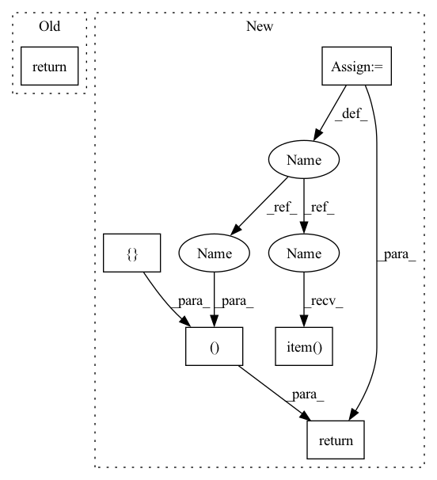

Pattern ID :1700

Before Change
log_prob = F.log_softmax(input_tensor, dim=-1)
prob = torch.exp(log_prob)
target = target_tensor.long()
return {"T":F.nll_loss(
((1 - prob) ** self.gamma) * log_prob,
target_tensor.long(),
weight=self.weight,
After Change
log_prob = F.log_softmax(input_tensor, dim=-1)
prob = torch.exp(log_prob)
target = target_tensor.long()
loss = F.nll_loss(
((1 - prob) ** self.gamma) * log_prob,
target_tensor.long(),
weight=self.weight,
reduction = self.reduction
).mean()
return loss, {"T": loss.item()}
if __name__ == "__main__":
In pattern: SUPERPATTERN
Frequency: 3
Non-data size: 6
Instances
Fragment ID: 5801043
Project Name: kaylode/theseus
Commit Name: 6e5cfd1947913bd3a5a6ef96df26223fde80e3e5
Time: 2020-11-23
Author: official_kaylode@users.noreply.github.com
File Name: losses/focalloss.py
M Class Name: FocalLoss
N Class Name: FocalLoss
M Method Name: forward(3)
N Method Name: forward(3)
M Parent Class: nn.Module
N Parent Class: nn.Module
M File Name: losses/focalloss.py
N File Name: losses/focalloss.py
M Start Line: 33
M End Line: 38
N Start Line: 33
N End Line: 39
'>
Before Change
batch_size = predict.shape[0]
for prb, lbl in zip(probas, targets):
total_loss += lovasz_softmax_flat(prb, lbl, self.ignore_index, self.only_present)
return total_loss / batch_size
After Change
batch_size = predict.shape[0]
for prb, lbl in zip(probas, targets):
total_loss += lovasz_softmax_flat(prb, lbl, self.ignore_index, self.only_present)
loss = total_loss / batch_size
loss_dict = {"LOVASZ": loss.item()}
return loss, loss_dict
'>
Fragment ID: 5801044
Project Name: kaylode/theseus
Commit Name: 36281ee247b9224402b9d21ffcf8ab682068bc5d
Time: 2022-02-19
Author: pmkhoi@selab.hcmus.edu.vn
File Name: theseus/segmentation/losses/lovasz_loss.py
M Class Name: LovaszSoftmax
N Class Name: LovaszSoftmax
M Method Name: forward(4)
N Method Name: forward(4)
M Parent Class: nn.Module
N Parent Class: nn.Module
M File Name: theseus/segmentation/losses/lovasz_loss.py
N File Name: theseus/segmentation/losses/lovasz_loss.py
M Start Line: 77
M End Line: 82
N Start Line: 77
N End Line: 85
'>
Before Change
if loss_hard.numel() < n_min:
loss_hard, _ = loss.topk(n_min)
return torch.mean(loss_hard)
After Change
if loss_hard.numel() < n_min:
loss_hard, _ = loss.topk(n_min)
loss = loss_hard.mean()
loss_dict = {"OhemCE": loss.item()}
return loss, loss_dict
'>
Fragment ID: 5801045
Project Name: kaylode/theseus
Commit Name: d05f950218292f78c5aef6b85b473d941ef64dfd
Time: 2022-02-19
Author: pmkhoi@selab.hcmus.edu.vn
File Name: theseus/segmentation/losses/ce_loss.py
M Class Name: OhemCrossEntropy
N Class Name: OhemCrossEntropy
M Method Name: forward(4)
N Method Name: forward(4)
M Parent Class: nn.Module
N Parent Class: nn.Module
M File Name: theseus/segmentation/losses/ce_loss.py
N File Name: theseus/segmentation/losses/ce_loss.py
M Start Line: 67
M End Line: 73
N Start Line: 69
N End Line: 85